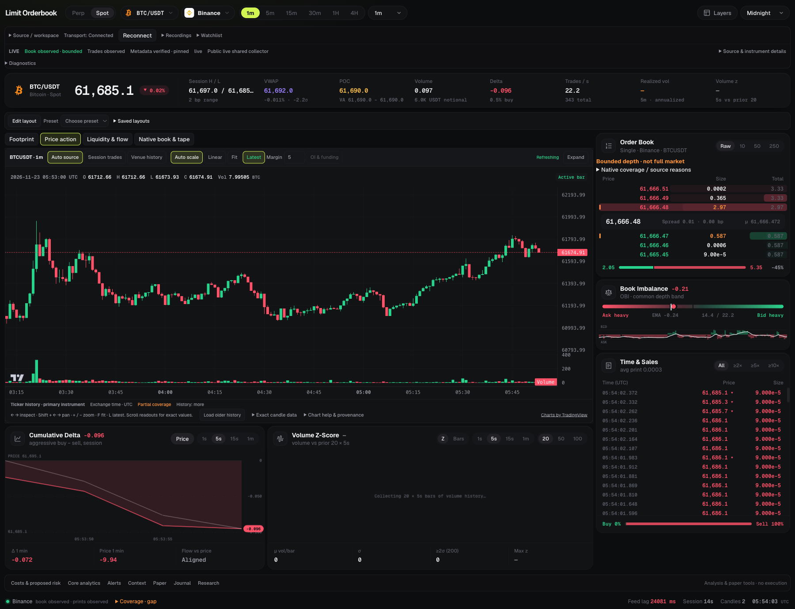
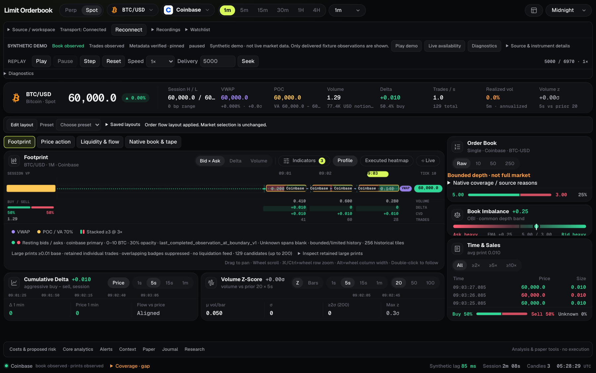
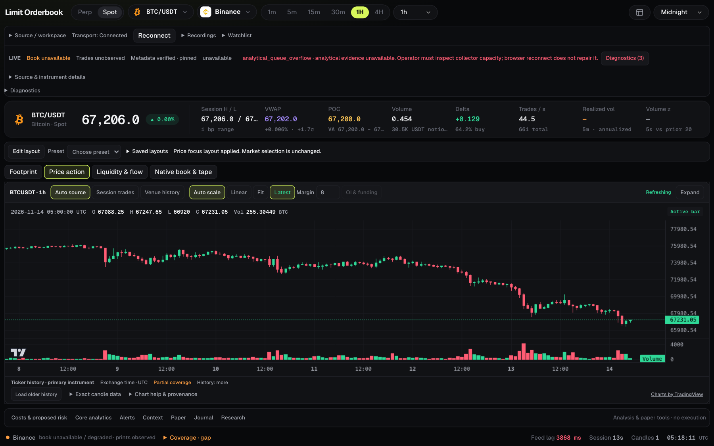

MARKET MICROSTRUCTURE / EVIDENCE
Crypto Order
Flow Terminal
A local research terminal for inspecting native spot and perpetual order books and trades across public venues, replaying recorded events, and simulating orders without placing one on an exchange.
What I built
- Python-owned book reconstruction and analytics, surfaced in a React workspace with explicit source health.
- Causal recording and deterministic replay that reconstruct auditable session state, including gaps.
- Simulated spot and perpetual accounting that freezes when analytical continuity is lost.

Enlarge screenshot ↗A chart is not a health certificate.
I built a local terminal that separates market observation, evidence quality, and simulated decisions. Python owns exchange connections, reconstruction, and financial calculations; React presents the workspace. The earlier Streamlit dashboard remains a thin legacy client, not the current architecture.
The linked walkthrough begins with recorded public Hyperliquid BTC perpetual data, then switches to a labeled synthetic sandbox. Its accelerated 60-second funding schedule is an explicit simulation assumption—not observed exchange funding.
Record upstream of the screen.
Venue adapters preserve instrument identity and apply source-specific sequence, snapshot, and checksum rules. When recording is enabled, original raw bytes branch into durable capture at ingestion; complete normalized transactions are captured before UI presentation. Recorder ownership survives a closed browser; freezing a chart stops neither collection nor recording.
Each browser document owns an independent Python session, even when feeds are shared. Session/source/generation fences scope WebSocket updates and HTTP mutations. An unavailable live source never silently becomes demo.
Clocks, replay, and what a seek guarantees
Exchange event time is distinct from receive-monotonic time. Ticker candles use exchange time; observed-flow windows use projected receive time. They are not stitched together. Exchange timestamps never sort global replay.
Raw replay re-decodes original bytes and verifies exact normalized batches; normalized replay skips decoding, not reducer checks. Seek reconstructs a complete causal prefix, clearing future analytical and paper state. Checkpoints and canonical hashes audit reconstruction; speed changes pacing, not economics. Recorded gaps stay gaps, never invented history.
Separate resting liquidity from executions.
The spread is the gap between the best displayed ask and bid, not a record of traded prices. A Bid × Ask footprint groups executed volume by price: seller-initiated trades at the bid beside buyer-initiated trades at the ask. Signed trade delta is buyer-initiated volume minus seller-initiated volume; cumulative volume delta (CVD) accumulates that signed flow over the observed window, with unknown aggressor flow kept separate. VWAP is the volume-weighted average execution price. These trade measures describe executions, not disappearing orders. Historical resting-depth overlays remain separate from traded-volume cells. Optional open-interest and funding panes identify their supplying instrument and require compatible observation clocks.


Enlarge screenshot ↗7b570bb7. The heatmap and footprint count executions at each price; the ladder shows resting liquidity. This is recorded observation, not a synthetic book or a live quote.Exact native evidence versus indicative aggregates
Native decimal values retain instrument, units, source references, and eligibility. Missing depth invalidates a full-band calculation; unknown aggressor flow stays unknown. Cross-venue USD/USDT/USDC displays combine quotes without conversion and are explicitly indicative—not executable spreads or paper-order prices.
A bounded measurement, not a latency promise.
The repository reports 47.6 ms browser receive-to-paint p95 during a four-minute, one-browser, 34-stream live observation. This sampled presentation benchmark is neither exchange-to-screen latency nor sustained-capacity certification.
Measurement conditions ↗ · Committed receipt ↗


Enlarge screenshot ↗
Inspectable regressions cover replay parity and seek, analytical exclusions, and perpetual accounting. Evidence links are pinned to revision 1e814ac; these are upstream receipts, not newly reproduced results.
Lost continuity freezes paper accounting.
Spot paper uses prefunded cash and inventory; supported perpetuals use isolated one-way positions. Market and marketable-limit IOC orders consume observed depth under explicit fees and latency assumptions. Native P&L is simulated accounting, not an exchange fill.
Fail-closed economics and paper limits
Perpetual margin, leverage, funding, and protective liquidation use declared models, not exchange risk tiers. Liquidation may remain partial or leave debt. There is no passive queue-fill, borrowing, or market-impact model. Unknown fees, conversion evidence, or insufficient depth are unavailable, not zero.
Analytical continuity loss freezes affected accounting at its last complete prefix. Reconnection cannot repair or thaw that run; an explicit new run establishes a new boundary.
Offline research uses chronological purging, embargo, and cost/latency stress on independent unfunded markouts—not a funded portfolio backtest. The CLI runs experiments; the terminal reads retained reports. Research hypotheses are not validated alpha.
No live execution, wallets, Rust HFT engine, automated market making, or funding-arbitrage strategy is implemented. Public-feed support does not guarantee regional access or financial readiness.